ペブル enemy:pebble
S05・01 ／ enemies-1 ／ 179×103px
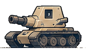


切り抜き元の範囲
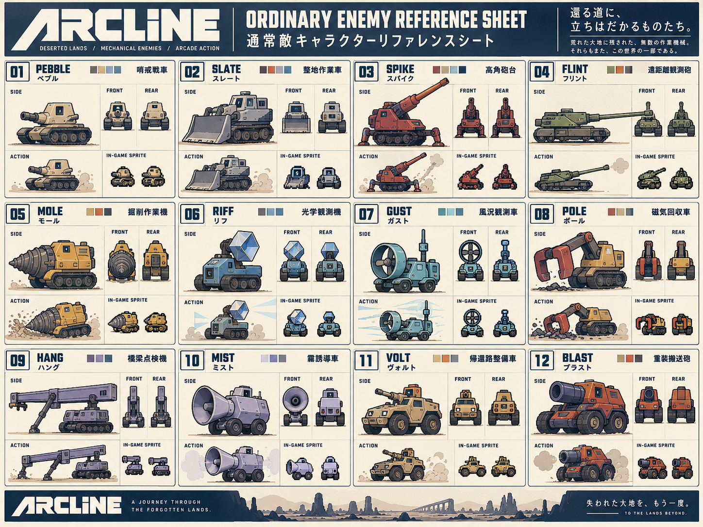
座標：25, 200, 204, 303
通常敵12体／中ボス10体／大ボス9体＋アークハート。大きいコンセプト設定画から抽出し、元のRGB画素と原画は維持。ゲーム内画像・縮小スプライト・生成AIは未使用。本編への組み込み前の素材です。
32体の透過PNGと台帳をまとめて保存（ZIP） ／ 切り抜き台帳 ／ ARCLINE
S05・01 ／ enemies-1 ／ 179×103px


座標：25, 200, 204, 303
S05・02 ／ enemies-1 ／ 194×119px
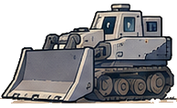
座標：373, 184, 567, 303
S05・03 ／ enemies-1 ／ 192×148px
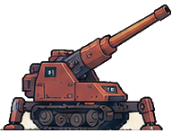
座標：734, 155, 926, 303
S05・04 ／ enemies-1 ／ 260×99px
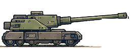
座標：1095, 202, 1355, 301
S05・05 ／ enemies-1 ／ 192×130px
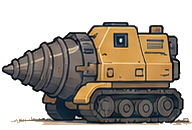
座標：16, 473, 208, 603
S05・06 ／ enemies-1 ／ 163×133px
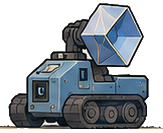
座標：391, 472, 554, 605
S05・07 ／ enemies-2 ／ 175×136px
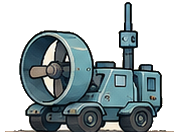
座標：744, 470, 919, 606
S05・08 ／ enemies-2 ／ 198×133px
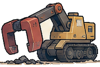
座標：1097, 472, 1295, 605
S05・09 ／ enemies-2 ／ 229×110px
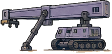
座標：17, 790, 246, 900
S05・10 ／ enemies-2 ／ 177×117px
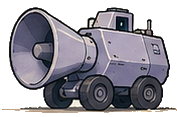
座標：386, 787, 563, 904
S05・11 ／ enemies-2 ／ 176×122px
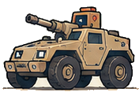
座標：740, 783, 916, 905
S05・12 ／ enemies-2 ／ 202×124px
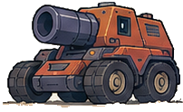
座標：1096, 780, 1298, 904
S04・01 ／ midbosses-1 ／ 266×167px
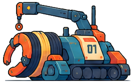
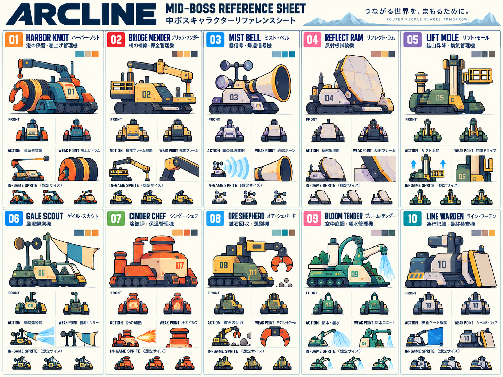
座標：20, 165, 286, 332
S04・02 ／ midbosses-1 ／ 263×166px
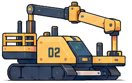
座標：314, 167, 577, 333
S04・03 ／ midbosses-1 ／ 250×164px
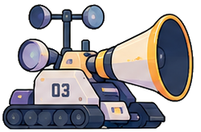
座標：598, 168, 848, 332
S04・04 ／ midbosses-1 ／ 260×181px
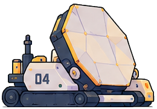
座標：878, 151, 1138, 332
S04・05 ／ midbosses-1 ／ 259×182px
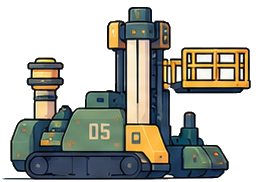
座標：1167, 150, 1426, 332
S04・06 ／ midbosses-2 ／ 267×163px
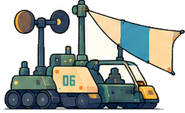
座標：20, 670, 287, 833
S04・07 ／ midbosses-2 ／ 265×156px
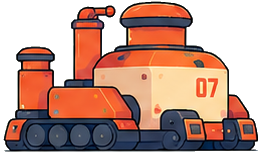
座標：311, 677, 576, 833
S04・08 ／ midbosses-2 ／ 264×160px
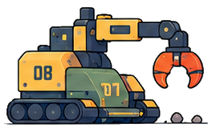
座標：590, 673, 854, 833
S04・09 ／ midbosses-2 ／ 262×161px
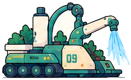
座標：878, 672, 1140, 833
Source water stream retained.
S04・10 ／ midbosses-2 ／ 274×163px
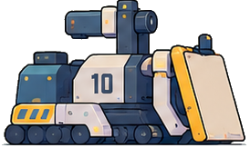
座標：1161, 670, 1435, 833
S03・01 ／ bosses-1 ／ 291×172px
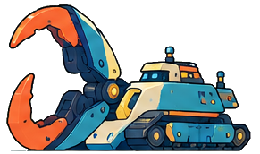
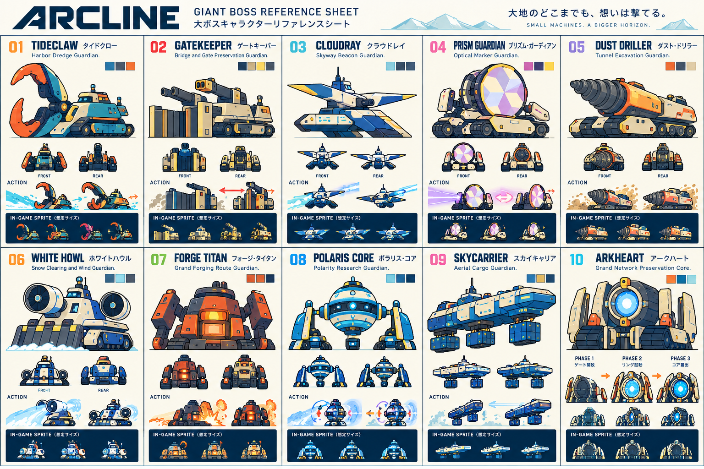
座標：13, 132, 304, 304
S03・02 ／ bosses-1 ／ 286×139px
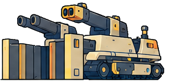
座標：322, 165, 608, 304
S03・03 ／ bosses-1 ／ 290×146px
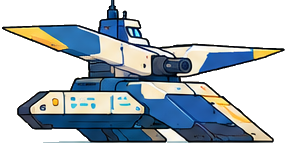
座標：625, 158, 915, 304
S03・04 ／ bosses-2 ／ 279×171px
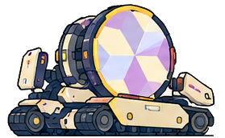
座標：933, 133, 1212, 304
S03・05 ／ bosses-2 ／ 296×142px
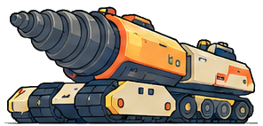
座標：1233, 162, 1529, 304
S03・06 ／ bosses-2 ／ 294×170px
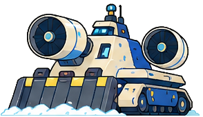
座標：12, 598, 306, 768
Source snow retained at feet; no reconstruction of occluded body.
S03・07 ／ bosses-3 ／ 286×144px
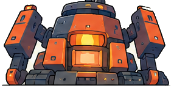
座標：323, 624, 609, 768
S03・08 ／ bosses-3 ／ 291×169px
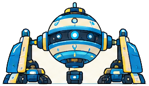
座標：624, 599, 915, 768
S03・09 ／ bosses-3 ／ 288×150px
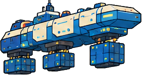
座標：932, 618, 1220, 768
S03・10 ／ archeart ／ 298×169px
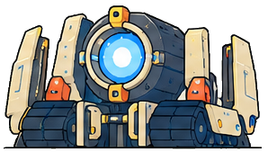
座標：1232, 599, 1530, 768
原画以上に拡大せず使います。ホワイトハウルの足元の雪、ブルーム・テンダーの放水は原画に含まれるものを保持しています。自機10機の背景付き原画は別途保持しており、集合用の透過化は未実施です。